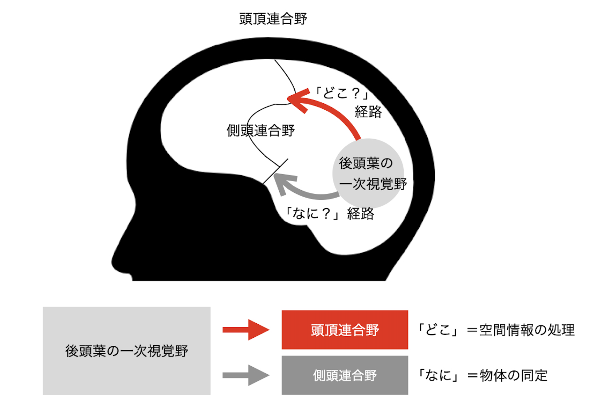

LDのしくみ
脳の情報伝達や情報処理の観点からは、LDの特性がかなり詳細にわかっています。ここで、読字障害と書字障害を例に紹介しましょう。「読む」と「書く」とでは、脳内での情報伝達・処理ルートが異なります。読む場合、子どもはまず文字を見てから音声にします。つまり、目から入力された視覚情報が脳内で音声情報へと変換され、その後に口から音声として出力されるわけです。
一方で、書く場合には、「文字を聞いて書く」、「文字を見て書き写す」、「作文などを書く」という三つのルートが存在します。「聞いて書く」では、耳から入力された聴覚情報が脳内で視覚情報へ変換され、その視覚情報がさらに運動情報へ変換されて運動（手で書く）として出力されます。「書き写す」では、目からの視覚情報が脳内で運動情報へ変換され、運動として出力されます。「作文などを書く」では、考えたこと（頭の中でつぶやいたり文字を思い浮かべたりしたもの）が、運動情報に変換され、やはり運動として出力されます。
こうした脳の情報伝達や情報処理のルートは、学習内容によって複数あります。いずれかのルートで問題が発生すると、その分野の学習が際立って困難になり、それがLDとしてあらわれると考えられています。
音韻意識
(Kita et al. 2013)は、音の操作が要求される課題を行ってもらい、その際の脳活動をfMRIという方法で測定しました。その結果、読み書き障害のある子どもでは、脳のある二つの領域で異常な活動が認められました。一つは右半球の前上側頭回という音の操作を行う際には強く活動する領域です。ここでは、読み書き障害のある子どもでは非常に弱い活動しか認められませんでした。もう一つは、大脳基底核（具体的には被殻）です。ここは負荷の強い音韻意識が必要なときにのみ活動が増加する、いわばサブエンジンのような領域です。こちらでは成人や定型発達児では増加した活動は見られない一方、読み書き障害のある子どもでは強い活動が示されました。すなわち、音の操作に必要とされる脳の活動が十分でないだけでなく、本来なら不要とされる領域が過剰に活動するなどの異常が、彼らの音韻意識の弱さの背景にあると考えられました。特に、後者の知見は、他の言語圏では認められておらず、日本語独自の病態としても考えられています。
心理学からの観点はこちら
視覚情報処理
ヒトが外界から受け取る情報のうち、最も多くを占めるのが視覚情報です。視覚情報としては、形、大きさ、色、明るさ、質感、位置、運動の方向などがあります。
視覚情報には、「どこ」の経路と「なに」の経路があります。目（網膜）から入った視覚情報は、後頭葉の一次視覚野に送られます。ここから頭頂連合野へ向かうのが「どこ」の経路です。「どこ」の経路では、空間内での物体の位置や働きをとらえます。
これに対して、側頭連合野に向かうのが「なに」の経路です。「なに」の経路では、形や色などの情報をもとに物体を視覚的に認識します。見ているものが何であるかを判断する経路といってもよいでしょう。
心理学からの観点はこちら
ワーキングメモリ
ワーキングメモリ(WM)とは、入力された情報を短い間、保持および処理する記憶のシステムです。
WMそのものが広汎な領域を説明する概念であるため、それらの弱さがどのように読み書きを阻害するかどうかは多岐のパターンが考えられます。ここでは、二つの影響に焦点化して紹介します。
第一には、文字や単語の読み書き習得を阻害することです。私たちは未知の言葉を聞いたときに心の中で反芻することが多いです。つまり、新規の情報について、音韻ループを活用しながら、音韻表象を長期記憶として定着させています。WMが弱いと音韻表象の形成に必要以上の資源が割かれるとともに、その表象そのものが不安定になります。不安定な音韻表象は書記素との対応付けの学習を阻害し、読み書きの正確性や流暢性が低下することにつながります。
さらに、視空間スケッチパッドの影響もあります。視空間スケッチパッドは、文字や文字列の視覚的イメージの形成を担います。異なるフォントで書かれた「か」と「か」でも、線の空間的配置が同等であれば、同じ「か」として認識する必要があります。視覚的イメージを形成し保持することは、音韻表象との対応関係の学習が前提といえます。それゆえ、WMの弱さは、音と文字との対応関係の学習を阻害するという点で、読み書きの困難さにつながると考えられます。
第二には、文章の読みを阻害することです。私たちは文章を読む際には、単語の意味理解、理解内容の保持、文の構造（統語構造）の把握、などを行いながら、すべての情報を統合するという、同時並列の処理が求められます（苧阪. 1994）。この文章を読んでいる瞬間にも、"一つ前の段落では何が書いてあったのか"、"統語という単語は何を意味しているのか"といった処理を並列に行っているはずです。WMの弱さは、文章の読みで求められる一時的な情報の処理・保持に影響を及ぼします。例えば、意味の保持ができなければ、何度も読み直す必要があり、どこを読んだのかの情報が失われれば、同じ行を二度読んでしまうこともあります。つまり、WMの弱さは、効率的な文章の読みを阻害すると考えられます。